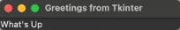

Introduction to Tkinter#
Author: Mike Wood
Learning Objectives: By the end of this notebook, you should be able to:
Explain the structure of a GUI contructed with Tkinter
Construct a simple GUI with a Label
The Tkinter Library#
To create graphic users interaces (GUIs) in Python, one option is to use the default tkinter package. Tkinter provides a python interface for the Tk - an open source widget toolkit for creating GUIs. Typically, tkinter is imported in the following manner:
from tkinter import *
from tkinter import ttk
The import statement above implements the ttk widgets, overwriting those in the standard tkinter import.
A Simple GUI#
To get a sense for how GUIs are constructed with tkinter, let’s take a look at a simple example.
# this is a GUI to show a simple label
# import tkinter
from tkinter import *
from tkinter import ttk
# define a class called HeyThere
class HeyThere:
# define an __init__ method with root as an argument
def __init__(self, root):
# add a title to the GUI
root.title("Greetings from Tkinter")
# add a Label to the GUI
label = ttk.Label(root, text="What's Up", width=30, justify='center')
# use the grid method to add the label to the GUI
label.grid(column=0, row=0)
# create a root Tk object
root = Tk()
# create a HeyThere object with the Tk root object as an argument
HeyThere(root)
# call the mainloop method on the Tk root object
root.mainloop()
The above script creates the following GUI:
The hey_there.py script provides an outline to a simple GUI – a window with a title and a single page that displays some text. This is a very basic GUI but it provides a look at the main features of a GUI in Tkinter:
The
Tkobject is the main “window” of the GUI. In the above example, this is namedrootas is typically done intkinterGUIs.A class defines the functionality of the GUI including its appearance, organization, and actions. In the above example, the class is called
HeyThereand is implemented with an__init__method which is passed theTkobject as an argument.The
__init__method of the class defines the organization of the “window” and what’s inside. In the above example, this method defines a title for the window and adds one Label with the text “What’s Up”.A
mainloopis implemented on theTkobject. This is an infinite loop that continues updating the application while it is active. When the user interacts with the GUI, a trip through this loop will trigger actions within the GUI. In this example, there are no actions available to the user except to close, expand, or minimize the window.
This example provides a quick look at the main elements of a tkinter GUI. We’ll take a look at how to build in some functionality to our GUI in the next notebook.